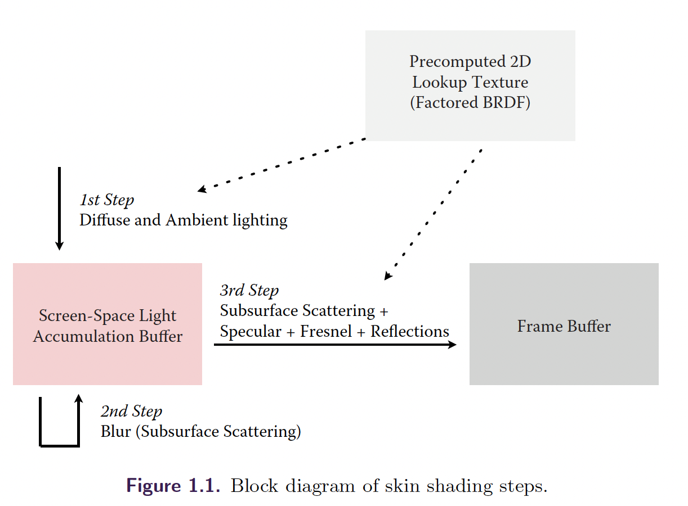
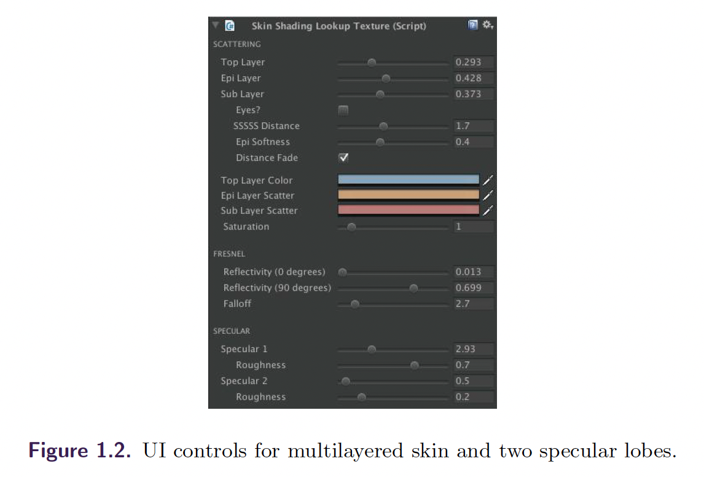
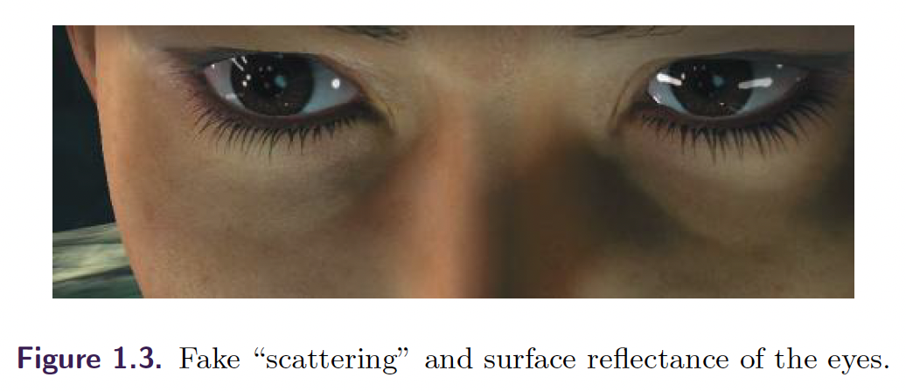
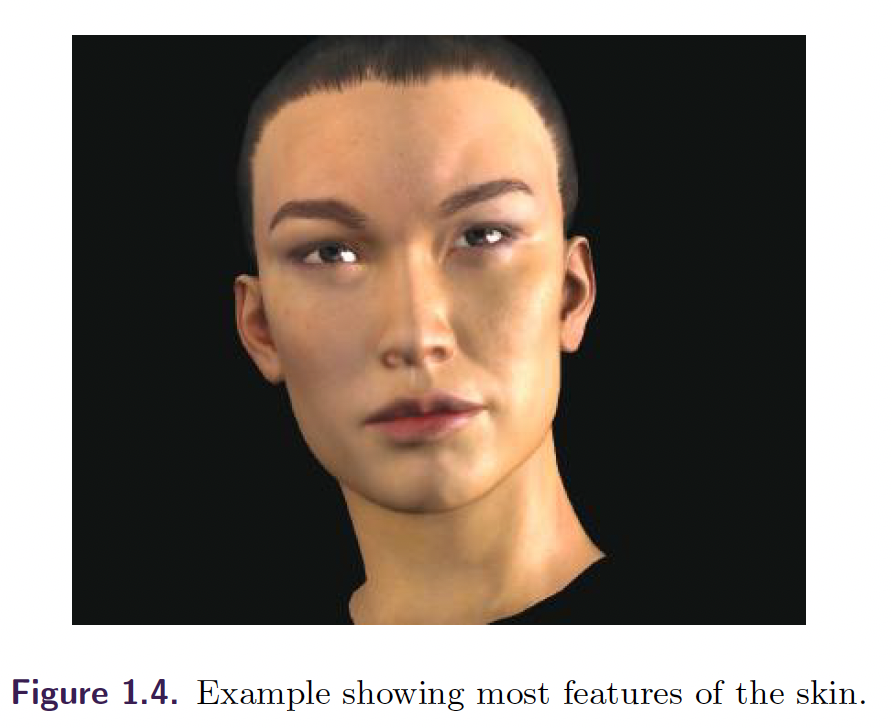

最近在看皮肤渲染，这篇文章标题范围很大，以为干货很多，实际是一个工程项文章，讲了SSSS方案落地移动端和相关性能优化点。个人感觉最大的优化在于低分辨率的4S集成方案。
整理了下译文，有兴趣的同学推荐阅读原文：Realistic Real-Time Skin Rendering on Mobile。
名词解释
- subsurface scattering 次表面散射
- surface reflectance 表面反射
- dielectric 电介质
- ALU 算数逻辑单元
- blur 模糊
- irradiance 辐照度
1. Overview
皮肤渲染的挑战：a) 次表面散射 b) 表面反射，相比于塑料、木头等材质更加复杂。对于很多均匀材质，我们可以近似次表面散射为diffuse计算，近似表面反射到高光计算，类似Blinn-Phong。
然而皮肤包含多层半透明组织，拥有不同的光照散射、反射特性，为了达到实时渲染的目的，我们必须找到高效的多层组织仿真算法那。
1.1 皮肤表面反射模型
当光到达皮肤表面，很少一部分从最外层油脂层反射除去。最外层油脂和组织细胞是电介质材质，反射光照颜色，不进行着色，可以件欧美为高国光反射方程。
绝大部分光进入皮肤，在内部吸收、散射、反射，其中很大比例通过反射再次离开皮肤。在[Donner and Jensen 05]一文中提到单高光层不足以描述这个复杂过程。本文的实现中，听从[d’Eon and Luebke 07]一文中的建议，采用两层分离的高光反射层。
从经验观察中我们得知：对于我们感知皮肤，表面反射非常重要。使用Blinn-Phong模型虽然简单，但是并不足够。为了更加物理上准确，我们采用基于微表面模型的光照模型。
我们使用a) Beckmann微表面分布函数; b) 几何项的粗劣近似 c) 牺牲Fresnel项的精确度，替换其中的像素法线、使用半角向量。整体来看这个模型，比较像Cook-Torrance的简化版本[Kelemen and Szirmay-Kalos 01]。
1.2 皮肤次表面散射模型
在皮肤表层下面，光照很快变成漫反射因为散射和部分被组织吸收。由于皮肤是多层吸收率不同的组织组成，使得事情更加复杂。试图真正分析这一过程的方法都不再可行。
取代使用这种方式，入射光可以捕捉并储存在专用buffer中进行模糊，纹理空间进行多次高斯模糊[Borshukov and Lewis 03] [d’Eon and Luebke 07]，在移动端GPU是无法被接受的，由于带宽、内存的限制。
另一方面，入射光可以再屏幕空间buffer进行捕捉和模糊[Jimenez et al. 09]，这一方案对移动端GPU友好很多。
1.3 线性光照的重要性
准确的皮肤着色依赖伽马矫正，如果出错会有一种典型的淡黄色效果[d’Eon and Luebke 07]。因为颜色贴图是在sRGB空间制作，我们需要在线性空间下计算光照方程，并且再返回sRGB空间进行展示。
2. 移动端GPU的性能
尽管移动端GPU发展速度快，仍然和台式机相差甚远，我们看下几个重要方法在移动端的可行性：
2.1 皮肤次表面散射
尽管屏幕空间模糊需要额外的渲染pass，整体开销在我们的demo占据GPU负载的5%-10%，不同尺度小效果也很好。同时可以适当减少屏幕空间buffer大小。
2.2 PBR
即使是最简单的能量守恒版本的Blinn-Phong高光层对于移动端GPU都是很昂贵的，每个像素需要太多的ALU操作,我们使用预计算BRDF 2D纹理的方案。最终皮肤像素的着色占据所有GPU负载的50%，侧面印证这里算法优化的必要性。
2.3 逐像素环境反射
为了考虑环境反射，需要从normal map中采样法线并从tangent坐标系转换到世界坐标系，对于每个像素需要额外的点积操作。我们使用顶点法线代替，略微牺牲一些效果。因为模型本身三角形密集，因此导致的精度损失非常小。
2.4 线性光照
尽管sRGB纹理读取对于移动端GPU不重要，在GLES 2.0中只能通过平台特定扩展支持。即使在3.0中，伽马矫正已经是核心API一部分，纹理读取对于不同系列的GPU开销仍然不同。
然而，我们可以只在需要的地方使用伽马矫正，比如皮肤的像素部分，屏幕其他区域可以不进行伽马矫正。
我们期望这种优化在未来不再必要，当GLES3.0克服不同GPU的开销变得相似时。
3 实现
3.1 屏幕空间光照积分buffer
我们解决次表面散射的方式：使用临时的低分辨率屏幕空间buffer积分入射光照（漫反射和环境），默认我们使用屏幕分辨率的1/4作为光照积分buffer。

我们首先渲染所有的皮肤渲染角色，在buffer中遍历所有入射光和排序结果。需要说明我们想要储存命中表面的光照，在这一步忽视皮肤本身颜色。用alpha数值标记覆盖的像素，用来和背景进行区分。
在渲染光照积分buffer时，我们适当沿图形法线方向延长一些偏移，用来弥补低分辨率的边缘效果损失。
3.2 次表面散射（屏幕空间漫反射）
第二步，我们使用可分离高斯模糊用来仿真皮肤组织下的散射，使用第一步中的alpha数值用来区分皮肤从而避免漏光。我们发现：使用一次模糊足够达到视觉上满意的效果，多次模糊会提升最终成像质量。
模糊的光照积分buffer会在皮肤着色的最后步骤中进行采样，用来恢复光照影响像素的漫反射部分。
实践上，很少有情况皮肤覆盖很大的屏幕区域，根据这一点，我们生成几何包围盒只在内部进行模糊。节省了带宽，尤其是角色离镜头很远的时候。
3.3 多层皮肤
很多离线和在线渲染引擎将皮肤建模为三层材质模型：油脂层、表皮层、真皮层，各自使用不同的散射和吸收参数。处于性能考虑本文只使用两层模型，事实上对于设计师来讲是假的三层模型，通过转换参数应用在两层模型中。层级混合会在皮肤着色的最后一步完成。

3.4 应用PBR
如前文讨论，对于高光项本文使用基于物理的微表面分步建模。为了达到实时目标，预积分了一张2D查找纹理，承载BRDF中主要计算部分。
在像素着色器中，我们使用法线和半角向量夹角（NH）作为一个坐标轴，法线和视点方向夹角（NV）作为另一个坐标轴，我们可以在mip map链中储存roughness参数变化。
我们使用预计算中4个通道来储存不同信息：
- 前两个通道储存NH和NV对于两个高光层的响应
- 第三个通道储存预积分的对于不同NV变化的Fresnel项
- 最后一个通道储存漫反射分量的能量守恒项，光进入次表面层前的反射光积分
因为本文使用预计算查找纹理，对于第二层高光基本可以忽略不计。并且，通过近似0开销达到了能量守恒。
3.5 GPU负载均衡
找到一个合适的查找纹理大小对于优化很重要，本文使用32x128分辨率。
3.6 另类BRDF因子
当使用预计算查找纹理时，有一些其他可能的BRDF因子方案。一种是使用NH和VL-储存Cook-Torrance不同的近似值。
3.7 可选伽马矫正
如前文讨论，现象光照非常重要并且需要伽马和逆伽马矫正，本文采用如下方案加速这一过程。首先伽马因子使用2.0，数据额计算变为开放和次方，比2.2/2.4计算要快很多。非全局伽马矫正，只在需要的像素上进行矫正。
3.8 眼睛的散射
眼睛本身就是一个渲染挑战，本文使用的解决方案是忽略模拟眼睛内部的次表面散射，眼睛部分不参与光照积分buffer，很多问题被眼睛的高反射率隐藏。闭上眼睛时，本文添加一个很小量的偏移来体现眼线折射。

3.9 皮肤细节的等级
为了避免在特定距离下蜡状和看起来非常平的皮肤效果，散射核的尺寸需要根据视点距离降低。然而在小尺寸积分buffer上使用小尺寸的模糊核会看起来非常低分辨率。因此，除了根据距离减小模糊效果外，本文同样使用更加简单的单pass皮肤shader。简单版shader使用非常粗糙的次表面散射近似：忽略逐像素法线的高频部分（[Penner and Borshukov 11]中的bent normal），但是仍然保持表面反射部分。作为一个额外有点，远端皮肤渲染性能开销更低。
4 结果
4.1 问题和限制
处于性能原因，目前的皮肤渲染方法局限于单个逐像素光照。其他光照使用逐顶点方式。
一个相对高开销的方面：皮肤geometry需要被渲染两遍，一遍是在光照积分buffer，一遍是在framebuffer中。第一遍中使用开销很低的shader并且仅包含数量不多的像素。
由于屏幕空间模糊方案的限制，后向散射的问题难以建模（比如耳朵在红光前闪烁），可以通过预计算厚度图在积分buffer中应用来近似模拟后向散射。
4.2 对比
[Penner and Borshukov 11]中的预积分方案可以再移动端皮肤渲染中应用，然而在移动端GPU上采样预BRDF积分曲率依然很昂贵。
4.3 Shader
我们最终的shader包含4个独立的纹理读取（图1.4）：

- albedo和反射率贴图
- 法线贴图
- 环境反射cube贴图
- 模糊的辐照度贴图
还有在预计算BRDF查找纹理中有一个独立的纹理读取，整个shader包含40个向量操作，在当前移动端GPU上表现良好。
5 总结
demo中每帧包含60000个动画几何图形使用皮肤着色，基本覆盖屏幕主要区域。在iPad4上全屏分辨率（2048x1536）上达到平滑30fps，在很多其他现代移动设备上达到了相似性能表现。
参考文献
[Borshukov and Lewis 03] George Borshukov and J. P. Lewis. “Realistic Human Face Rendering for The Matrix Reloaded.” In ACM SIGGRAPH 2003 Sketches & Applications, SIGGRAPH ’03, p. Article no. 1. New York: ACM, 2003.
[d’Eon and Luebke 07] Eugene d’Eon and David Luebke. “Advanced Techniques for Realistic Real-Time Skin Rendering.” In GPU Gems 3, edited by Hubert Nguyen, pp. 293–347. Upper Saddle River, NJ: Addison-Wesley, 2007.
[Donner and Jensen 05] Craig Donner and HenrikWann Jensen. “Light Diffusion in Multi-layered Translucent Materials.” ACM Transactions on Graphics 24:3 (2005), 1032–1039.
[Jimenez et al. 09] Jorge Jimenez, Veronica Sundstedt, and Diego Gutierrez. “Screen-Space Perceptual Rendering of Human Skin.” ACM Transactions on Applied Perception 6:4 (2009), 23:1–23:15.
[Jimenez 12] Jorge Jimenez. “Practical Real-Time Strategies for Photorealistic Skin Rendering and Antialiasing.” Ph.D. thesis, Universidad de Zaragoza, Zaragoza, Spain, 2012. Available online (http://diglib.eg.org/EG/DL/dissonline/doc/jimenez.pdf).
[Kelemen and Szirmay-Kalos 01] Csaba Kelemen and L´aszl´o Szirmay-Kalos. “A Microfacet Based Coupled Specular-Matte BRDF Model with Importance Sampling.” In Proceedings Eurographics ’01, pp. 25–34. Aire-la-Ville, Switzerland: Eurogrpahics Association, 2001.
[Penner and Borshukov 11] Eric Penner and George Borshukov. “Pre-Integrated Skin Shading.” In GPU Pro 2, edited by Wolfgang Engel, pp. 41–55. Natick, MA: A K Peters, Ltd., 2011.
[Pharr and Humphreys 04] Matt Pharr and Greg Humphreys. Physically Based Rendering: From Theory to Implementation. San Francisco: Morgan Kaufmann, 2004.
[Sch¨uler 11] Christian Sch¨uler. “The Blinn-Phong Normalization Zoo.” www.thetenthplanet.de/archives/255, 2011.